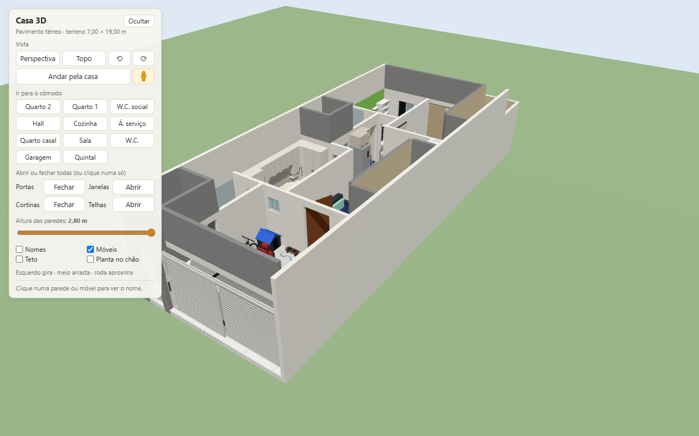

Casa 3D
Modelo 3D da casa a partir da planta baixa do pavimento térreo (docs/planta-baixa-terreo.jpg), feito com Three.js no navegador.


Como abrir
node serve.mjs
Depois acesse http://localhost:5173. O Three.js é carregado da CDN jsDelivr, então é preciso estar com internet.
Arquivo único
casa-3d.html é o projeto inteiro num arquivo só (cerca de 2 MB): abre com dois cliques, direto do disco, sem servidor e sem internet, e pode ser enviado para outras pessoas. Ele tem dentro o código de src/, o Three.js e a imagem da planta. Depois de mudar o projeto, gere de novo (precisa de internet só nessa hora, para baixar o Three.js):
node scripts/gerar-html.mjs
Onde estão as coisas
- src/planta.js: paredes, portas, janelas e cômodos em metros, transcritos da planta. Para corrigir uma medida, é aqui.
- src/moveis.js: móveis em formas simples e onde cada um fica.
- src/main.js: monta a cena 3D a partir desses dados.
- scripts/gerar-html.mjs: gera o arquivo único casa-3d.html.
No visualizador, os botões de "Ir para o cômodo" enquadram cada cômodo (e o quintal) e os de 90° giram o modelo para a esquerda ou para a direita; o botão esquerdo do mouse gira, o botão do meio arrasta a vista e a roda aproxima. Um clique numa porta, janela de correr ou cortina abre ou fecha só ela, e cada botão de "Abrir ou fechar todas" (portas, janelas, cortinas e as telhas soltas sobre as caixas d'água) faz o contrário do estado atual: com alguma peça daquele tipo aberta, fecha todas; com todas fechadas, abre todas. O texto do botão diz o que o próximo clique faz. As janelas começam fechadas; aberta, uma folha corre por cima da outra (no vidro da cozinha para a A. vent. e nas janelas do Quarto casal e do W.C. da suíte, a do lado do início do vão). A opção "Teto" mostra o forro, o telhado e as caixas d'água, que começam ocultos para dar para ver dentro dos cômodos. A opção "Nomes" mostra o nome e a área de cada cômodo no chão; ela começa desmarcada.
O botão "Andar pela casa" põe a vista na altura dos olhos, sempre na calçada, a 3 m do portão da garagem e olhando para a casa, e liga o teto. Para entrar, clique numa folha do portão. W A S D ou as setas andam (as setas para os lados viram), Shift corre, arrastar o mouse olha em volta, a roda do mouse aproxima ou afasta (sem sair do lugar) e um clique numa porta, janela ou cortina abre ou fecha. Enquanto o passeio está ligado, o botão fica em destaque e vira "Sair do passeio". Paredes, janelas e portas fechadas barram o caminho; os móveis não. Esc ou o mesmo botão voltam à vista de antes.
Como no Street View, dá para arrastar o bonequinho que fica ao lado de "Andar pela casa" e soltá-lo sobre um cômodo (ou na calçada): o passeio começa ali, olhando na direção da vista atual. Durante o arraste, ele mostra o nome do cômodo sob o cursor; o piso é achado mesmo com o teto à mostra.
No celular, o menu começa oculto (botão "☰ Menu" no alto) e, aberto, fica preso embaixo, até metade da tela; com o celular deitado, fica do lado esquerdo. Ele se recolhe sozinho ao ir para um cômodo ou começar o passeio. Um dedo gira o modelo, dois dedos arrastam e aproximam, e um toque numa porta, janela ou cortina abre ou fecha; com o menu oculto, o nome do que foi tocado aparece num aviso no alto. No passeio, o joystick no canto de baixo anda (quanto mais longe do centro, mais rápido), arrastar o dedo olha em volta (como com o mouse, a vista vira para o lado do arraste), a pinça aproxima e o botão "Sair do passeio" no alto volta à vista de antes. Em tela em pé, o ângulo de visão abre mais na vertical, para caber de lado quase o mesmo que numa tela deitada.
- docs/: planta original; fotos e vídeos de cada cômodo em docs/referencias/.
Confirmado com o morador
Entre a cozinha e a sala não há parede: a abertura vai da parede do Quarto casal até a da área de serviço e até o teto, sem viga.
Sala de estar/jantar (fotos e vídeo):
- Porta de entrada de madeira escura com almofadas horizontais, que abre para dentro com a dobradiça do lado do Quarto casal e fica aberta até perto do sofá; soleira de granito preto.
- Sofá retrátil de três lugares, azul-marinho com almofadas verde-água, na parede do Quarto casal, junto da porta.
- Rack off-white com painel de TV, faixa de madeira e torre de prateleiras na parede da circulação, a cerca de 0,80 m do canto da porta.
- Piso de porcelanato cinza claro, paredes brancas. O forro rebaixado com fita de LED não foi modelado. As medidas e posições dos móveis são estimadas.
Cozinha (fotos e vídeo):
- Balcão americano de granito preto que continua a bancada da pia, com uma perna de granito até o chão no meio da abertura e um trecho mais raso do lado da sala, preso na parede, até a parede da circulação. Três pendentes de vidro fosco sobre o balcão.
- Na parede da área de serviço: porta almofadada que abre para dentro da cozinha, com soleira de granito preto; bancada de granito preto com gaveteiro, cuba com torneira preta sob a janela, cooktop e forno embutido; armários bege em cima, com nicho do micro-ondas e depurador preto.
- Na parede da A. vent.: geladeira inox com um puxador só, armário em cima e coluna de nichos abertos ao lado, sem porta.
- Mesa de jantar encostada na parede do Quarto 1, com três cadeiras de capa bege: uma na ponta da sala e duas do lado da bancada. Piso de porcelanato cinza claro.
- No canto do hall, entre a porta do W.C. social e a coluna de nichos: fruteira de ferro preto com tampo de granito e o filtro de barro em cima, e o galão de água no chão.
- As medidas e posições dos móveis são estimadas.
Quarto 1 (fotos e vídeo):
- A porta da planta entre o quarto e a cozinha não existe. A entrada é pelo hall, perto da parede da cozinha, com uma porta de correr aparente de madeira clara que desliza por dentro do quarto, rumo ao fundo, e soleira de granito preto.
- Piso de porcelanato cinza claro, paredes brancas; cortina bege de blackout de parede a parede no fundo, aberta no meio da janela.
- Móveis planejados brancos e amadeirados na parede da circulação, do fundo para a frente: torre de canto com criado-mudo e nicho, cama de solteiro sob um aéreo de duas portas, guarda-roupa alto de duas portas, nicho aberto, segunda cama de solteiro sob outro aéreo e torre com gavetas. Os móveis não chegam à parede da cozinha: entre a torre e ela fica um vão livre de cerca de 0,50 m (foto 5). As camas têm a cabeceira nos móveis.
- Na parede do hall: mesa branca no canto da janela, penteadeira branca com espelho iluminado e cadeira preta de pés de madeira, e ventilador de coluna preto ao lado da porta. Espelho de corpo com moldura dourada na parede da cozinha.
- A posição do vão no hall, as medidas e as posições dos móveis são estimadas.
Quarto 2 (fotos e vídeo):
- Parede da divisa esquerda pintada de verde; as outras são brancas.
- Piso de porcelanato cinza claro, o mesmo do hall.
- Janela de correr de alumínio branco com duas folhas (a da esquerda com película escura) e peitoril de granito preto, centrada na parede do fundo.
- Porta de madeira clara que abre para dentro e encosta na parede do Quarto 1, com soleira de granito preto.
- Móveis: estante branca no canto da janela, cadeira estofada, mesa suspensa branca ao longo da parede do Quarto 1 (painel de ferramentas em L no canto da janela, gabinete, dois monitores, prateleira), mesa preta com gaveteiro colorido na parede verde com três prateleiras, mesa suspensa branca na parede da porta (gabinete, dois monitores, prateleira), duas cadeiras de escritório e o violão acima da porta. As medidas e posições dos móveis são estimadas.
W.C. social (fotos e vídeo):
- Porta de madeira clara que abre para dentro e encosta no lado do Quarto 2, com soleira de granito preto.
- Box de vidro de correr de parede a parede junto da janela, com a parede da janela em revestimento cinza de relevo geométrico e nicho com moldura de mármore; as outras paredes são de azulejo branco. Janela de correr de alumínio.
- Bancada suspensa de mármore bege com cuba esculpida e espelho até o forro na parede do Quarto 2, no canto da divisa (posição ao longo da parede estimada, fora do giro da porta).
- Na divisa, do Quarto 2 para o box: toalheiro, vaso sanitário e chuveiro elétrico dentro do box. Toalheiro na parede da porta; piso de porcelanato branco.
- As medidas e posições das peças são estimadas.
A. vent. (fotos e vídeo):
- Aberta para o céu. As quatro paredes têm o revestimento cinza geométrico até cerca de 2,40 m; acima, parede sem acabamento.
- A janela da cozinha é um vidro de correr transparente com caixilho branco e peitoril de granito preto, nas medidas da planta (1,20 × 1,70, peitoril 0,40).
- Piso de porcelanato branco; vaso grande com planta no canto da divisa com o W.C. social, vaso preto pequeno junto da parede do W.C. e jardineira junto do vidro. As posições são estimadas.
Quarto casal (fotos e vídeo):
- Entrada pela cozinha, com porta de madeira clara que abre para dentro e encosta na parede da sala, e soleira de granito preto.
- Janela pequena e alta de alumínio branco ao lado da porta do W.C., com cortina recolhida no canto. É bem menor que a da planta (1,00 × 1,70, peitoril 0,40).
- Piso de porcelanato cinza claro, paredes brancas.
- Móveis: cama de casal com a cabeceira na divisa esquerda, armário aéreo de quatro portas sobre a cama, duas torres com criado-mudo, nicho e um armário de porta inteiriça até o alto, guarda-roupa de canto com porta em diagonal e guarda-roupa de duas portas na parede da cozinha, guarda-roupa alto junto à porta do W.C., ventilador de coluna. As medidas e posições são estimadas.
W.C. da suíte (mesma pasta, fotos
wc-*):- Box de vidro de correr de parede a parede no fundo, com a parede da janela em revestimento cinza de relevo geométrico; as outras paredes são de azulejo branco.
- Bancada suspensa de mármore bege com cuba esculpida e espelho grande na divisa esquerda; vaso na parede da garagem, entre a porta e o box; chuveiro elétrico na divisa; toalheiro na parede da garagem.
- Porta que abre para dentro do W.C. e encosta na parede da garagem, com soleira de granito preto; piso de porcelanato branco.
Garagem e área livre (fotos e vídeo):
- Portão de correr de alumínio branco, fechado (não dá para ver dentro), em duas folhas de três módulos, lisas por fora e com os montantes só por dentro, com faixa de vidro fosco na ponta de fora de cada uma e guia em cima. Cada folha corre para o lado da outra, em trilhos separados (a da direita por trás, do lado de dentro), e para na frente dela: só uma metade do vão fica livre por vez. No modelo, abrir uma folha fecha a outra.
- Porta social do mesmo alumínio fechado, com uma faixa de vidro fosco do lado da divisa, perto do pilar como na planta: entre ela e a divisa há uns 0,55 m de parede, onde ficam o número, o medidor e a caixa de correio (não modelados). Entre ela e o portão há pilar de concreto cinza.
- A garagem é coberta até as vigas marcadas na planta ("Projeção da viga"). A área livre e a faixa junto do portão ficam a céu aberto.
- Piso de porcelanato cinza claro na parte coberta e branco na descoberta, separados por uma faixa de granito preto em L sob as vigas.
- Área livre com a divisa, a parede do W.C. e a frente em concreto cinza, sem pintura. As paredes da garagem são brancas.
- Passagem aberta para a circulação, com verga.
- Casinha de cachorro de plástico preto com telhado azul no canto da parede do W.C. com a da sala, com a porta para a garagem (fotos 6 e 7); bicicleta preta ao longo da parede do W.C., com a roda da frente junto da casinha, presa no suporte, e uma moto Honda Biz ao lado dela, na mesma direção (cor não informada; ficou vermelha). As medidas e posições são estimadas.
- Comedouro elevado de madeira escura com duas tigelas pretas (água e ração), sobre um tapete em forma de osso, na frente da casinha, encostado na parede da sala, perto da porta de entrada (foto 8).
Fachada (foto):
- Frente da área livre e pilar em concreto cinza; portão e porta social como descritos na garagem.
- Câmera de segurança com giro, branca, com duas antenas, presa na face de dentro do pilar da divisa direita, junto do portão, a cerca de 3,50 m do chão, virada para dentro da garagem (foto).
- Platibanda de concreto cinza sobre a viga da garagem, terminando antes da divisa direita, e continuando, recuada, pela lateral da área livre e pela frente do W.C. As paredes laterais (as divisas, do fundo dos quartos até a frente) sobem até a mesma altura, com a mesma cor de baixo do teto (cinza na área livre, bege na circulação e na área de serviço, branca na garagem). O fundo da casa não aparece na foto e ficou sem platibanda.
Circulação, área de serviço e área externa (vídeo):
- Piso de cerâmica rústica retangular, em fiadas desencontradas, em tons de bege e cinza, também na área externa do fundo.
- Paredes em textura bege areia, inclusive as divisas. A circulação é descoberta; a área de serviço é coberta.
- Na área de serviço, a parede da cozinha é de azulejo creme. Da frente para o fundo: pia de lavar roupa branca no canto da parede da frente, com o botijão de gás do fogão (azul) embaixo; tanquinho; e máquina de lavar de abrir por cima, branca com tampa preta, antes da porta da cozinha. Em cima, armários aéreos brancos e um com porta de vidro escuro, e mais um aéreo baixo acima da porta da cozinha.
- Não modelados: varal de teto com prendedores, baldes, vasos e objetos soltos. As medidas e posições são estimadas.
Telhado (vídeo):
- Telhas de fibrocimento onduladas, cinza, em duas águas que sobem para as laterais e descem para uma calha no meio, de frente a fundo (em V), escondidas atrás das platibandas. As duas águas não se encostam: fica um vão aberto de cerca de 40 cm sobre a calha. A platibanda contorna todo o telhado: fachada, divisas, fundo, o lado da circulação, as pontas da área de serviço e a volta da A. vent.
- As caixas d'água ficam embutidas no telhado, sobre a laje e sob as telhas. Duas caixas azuis de polietileno ficam num cercado de alvenaria rebocado, encostado na divisa esquerda, da A. vent. rumo ao fundo (sobre o W.C. social, o hall e o Quarto 2), que sobe só um pouco acima das telhas em volta e é coberto por um trecho de telhas soltas. A antena parabólica não foi modelada.
- Mais uma caixa d'água azul, menor (500 L), sob as telhas da área de serviço, encostada na divisa direita, também com um trecho de telhas soltas em cima. Como o trecho tem pouco mais de 1 m de largura, ela ficou com cerca de 1,10 m de diâmetro (estimado).
- No visualizador, com o teto à mostra, um clique nas telhas soltas (ou a linha "Telhas" do menu) abre o trecho como uma tampa, girando pela borda junto da divisa, para ver as caixas.
Área externa, o quintal do fundo (fotos e vídeo):
- Muro do fundo e divisas da altura da casa (2,80 m). As quatro paredes têm barrado de cerâmica marrom-rosada até cerca de 1 m e textura bege areia acima; piso de cerâmica rústica.
- No canto da divisa esquerda com o muro, chuveiro sobre um painel de cerâmica mais alto. No canto da divisa com a casa, bomba d'água num suporte, com os canos e a caixinha elétrica, sob uma prateleira de tábua, e um botijão de gás no chão, embaixo dela, ao lado da caixa d'água com tampa.
- Duas caixas d'água azuis no fundo (uma com tampa, junto da casa; outra aberta, mais adiante), com uma passagem de cerca de 0,50 m entre elas para chegar à bomba. Junto do muro, rumo à circulação: lixeira preta com tampa, dois baldes azuis e uma torneira. Perto da circulação: lixeira com saco preto, banquinho de madeira, suporte verde de mangueira na parede da casa e, no começo do quintal, perto do canto do muro com a divisa direita, o ralo (caixa de gordura) com grelha branca.
- Não modelados: varal, grade encostada na parede e objetos soltos. As medidas e posições são estimadas.


Estimado pelas fotos (confirmar com trena)
- Pé-direito de 2,60 m acima do piso (nível 0,20), aplicado na casa toda.
- Janela do Quarto 2 com 1,00 m de largura × 1,20 m de altura e peitoril a 0,90 m. Ela parece mais alta que larga, ao contrário da planta (1,20 × 1,10, peitoril 1,00).
- Placas de porcelanato de 60 × 60 cm.
- Janela do Quarto casal com 0,60 × 0,60 m e peitoril a 1,50 m. Box do W.C. da suíte a 1,00 m da parede do fundo.
- Janela do Quarto 1: a cortina cobre quase toda; ficou de correr em alumínio branco, com as medidas da planta (1,20 × 1,10, peitoril 1,00).
- Garagem: vigas com 0,25 m de altura, a da frente a 0,40 m do portão; verga da circulação a 2,30 m do piso; porta social com 0,80 × 2,30 m.
- Fachada: platibanda com o topo a 4,10 m do chão; porta social de 0,70 a 1,50 m da divisa esquerda.
- Telhado: calha a 3,15 m do chão, no meio da casa (a 3,00 m da divisa esquerda), e telhas subindo até 3,90 m junto das laterais. Cercado das caixas d'água com 1,90 × 4,30 m, paredes até 3,92 m do chão e telhas soltas a cerca de 4,00 m; as caixas ficam sobre a laje.
- Balcão e bancada da cozinha com tampo a 0,90 m; o balcão tem 0,60 m de fundo e a perna fica a 1,05 m da parede do Quarto casal. Janela sobre a pia com as medidas da planta (1,20 × 0,60, peitoril 1,00).
Premissas ainda não confirmadas
- As divisas laterais sobem inteiras até a altura da fachada, com o mesmo acabamento de baixo do teto.
- O forro é uma laje plana de 0,10 m apoiada nas paredes, sob o telhado. Ficam descobertas a área externa, a A. vent., as circulações laterais, a área livre e a faixa junto do portão; a área de serviço é coberta.
- Ainda não há móveis e esquadrias dos outros cômodos.